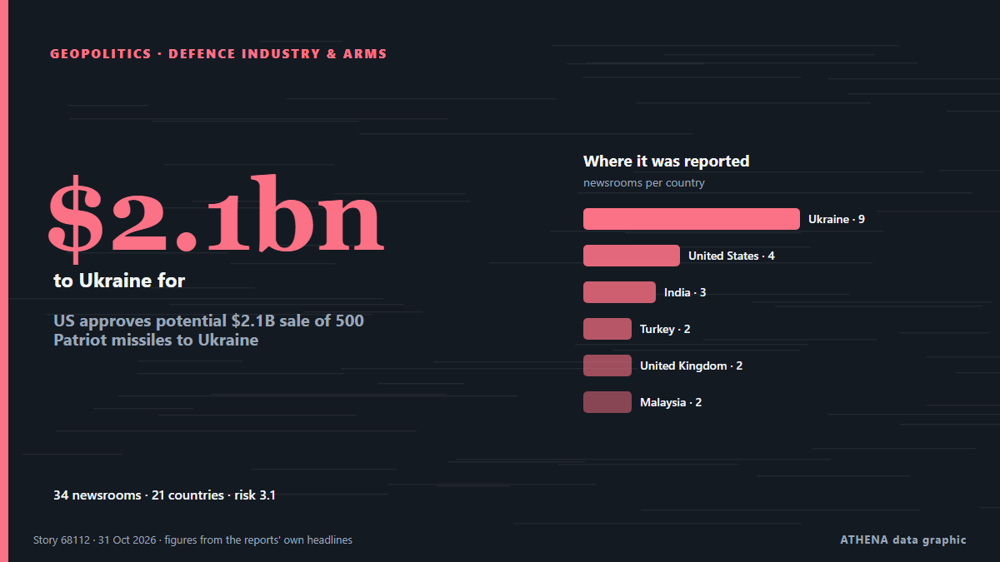

US approves potential $2.1B sale of 500 Patriot missiles to Ukraine

The U.S. Department of State has approved the potential sale to Ukraine of 500 PAC-3 MSE missiles for Patriot air defense systems, valued at a total of $2.1 billion. from Ukrinform (English)
Reported independently by 34 outlets in 21 countries since 30 Oct, first by Ukrinform (English); coverage is at its peak. ATHENA rates the risk moderate (3.1/10), driven mainly by the severity of the harm described and the pace of the reporting. Confidence is 92% (high), with 34 independent outlets corroborating it and an average source reliability of 77%.
Why it matters: Russia's full-scale invasion of Ukraine began in February 2022. This tracker follows the fighting, strikes on infrastructure and the diplomacy around the war, as covered by newsrooms around the world.
What changed: 41 new reports from 35 newsrooms in the 24 hours to 31 Oct.
First reported as: NATO top commander sees no delays in delivery of Patriot missiles to Ukraine
At a glance
Selected, scored and written by ATHENA's published methodology. No editor intervenes in individual events. How this is produced ›
| 30 Oct 14:00 UTC | 1 |
|---|---|
| 30 Oct 15:00 UTC | 0 |
| 30 Oct 16:00 UTC | 1 |
| 30 Oct 17:00 UTC | 0 |
| 30 Oct 18:00 UTC | 0 |
| 30 Oct 19:00 UTC | 4 |
| 30 Oct 20:00 UTC | 3 |
| 30 Oct 21:00 UTC | 3 |
| 30 Oct 22:00 UTC | 4 |
| 30 Oct 23:00 UTC | 7 |
| 31 Oct 00:00 UTC | 1 |
| 31 Oct 01:00 UTC | 0 |
| 31 Oct 02:00 UTC | 4 |
| 31 Oct 03:00 UTC | 3 |
| 31 Oct 04:00 UTC | 3 |
| 31 Oct 05:00 UTC | 1 |
| 31 Oct 06:00 UTC | 1 |
| 31 Oct 07:00 UTC | 3 |
| 31 Oct 08:00 UTC | 2 |
| 30 Oct 15:06 UTC | 0.0 |
|---|---|
| 30 Oct 20:58 UTC | 0.9 |
| 31 Oct 08:36 UTC | 3.1 |
| 31 Oct 08:36 UTC | 3.1 |
Why these numbers
Importance
Risk
Confidence
The reporting — who reported it, and when
headline as published · opens the original- Ukrinform (English) · UkraineNATO top commander sees no delays in delivery of Patriot missiles to Ukraine
- Ukrainska Pravda (English) · UkraineNATO's top commander sees no delays in delivery of Patriot missiles to Ukraine – Bloomberg
- Ukrainska Pravda (English) · UkraineUS approves possible sale of 500 Patriot missiles to Ukraine
- The Straits Times · SingaporeUS approves $2.6 billion Patriot missile sale to Ukraine
- Anadolu Agency (English) · TurkeyUS approves $2.1B Patriot missile sale to Ukraine
- APA (English) · AzerbaijanUS approved sale of 500 Patriot air defense missiles to Ukraine for $2.1 billion
- Breaking Defense · United StatesUS greenlights 500 Patriot missiles for Ukraine, with $2.1 billion to be paid by allies
- Ukrinform (English) · UkraineUS approves potential $2.1B sale of 500 Patriot missiles to Ukraine
- The Canadian Press (via CityNews) · CanadaUS approves a proposed $2.1 billion sale of Patriot interceptors to Ukraine after alleged holdup
- Kyiv Independent · UkraineUS approves $2.1 billion Patriot missile sale to Ukraine as NATO commander dismisses delivery concerns
- Kyiv Post · UkraineUS Approves 500 Patriot Missiles for Ukraine, but Zelensky Warns Deliveries May Not Begin for Years
- FBC News · FijiUS approves $2.1 billion Patriot missile sale to Ukraine
- BBC News · United KingdomUS approves sale of 500 Patriot missiles to Ukraine
- New Straits Times · MalaysiaTrump admin approves potential Patriot missile sale to Ukraine
- NBC News (World) · United StatesU.S. approves $2.1 billion sale of Patriot interceptors to Ukraine
- MyJoyOnline · GhanaUS approves sale of 500 Patriot missiles to Ukraine
- Meduza (English) · RussiaU.S. State Department approves potential $2.1 billion sale of 500 Patriot air defense missiles to Ukraine
- Arab News · Saudi ArabiaUS approves $2.1 billion Patriot missile sale to Ukraine
- Ukrainska Pravda (English) · UkraineZelenskyy says Patriot PAC-3 missile deliveries could take years, while Ukraine needs them this winter
- TASS (English) · RussiaUS approves sale of 500 Patriot missiles to Ukraine for $2.1 bln — State Department
- The Jerusalem Post · IsraelUS approves $2.1 billion Patriot missile sale to Ukraine amid delayed missile deliveries
- Türkiye Today · TurkeyUS clears $2.1B sale of 500 Patriot missiles to Ukraine funded by allies
- Free Malaysia Today · MalaysiaUS approves potential Patriot missiles sale to Ukraine
- The Hill · United StatesUkraine gets approval for Patriot missile sale
- Kyiv Post · UkrainePentagon Says Ukraine’s Patriot Missile Production Request Requires ‘Further Review’
- ABC News Australia · AustraliaUS approves $3 billion Patriot missile sale to Ukraine
- The Guardian · United KingdomUkraine’s Zelenskyy praises US over $2.1bn Patriot missile deal but warns it could take years
- Express Tribune · PakistanUS approves $2.1 billion Patriot missile sale to Ukraine
- Times of India · IndiaUS clears $2.1 billion Patriot missile deal for Ukraine, allies to pay
- NDTV · IndiaUS Approves Patriot Missile Sale To Ukraine, But Delivery Could Take Years
- Ada Derana · Sri LankaUS approves sale of 500 Patriot missiles to Ukraine
- Ukrinform (English) · UkraineZelensky: 500 Patriot interceptors could provide Ukraine with strong defense this winter
- Dawn · PakistanTrump admin approves potential Patriot missiles sale to Ukraine
- Al Jazeera English · QatarUS greenlights $2.1bn Patriot missile sale to Ukraine
- Times of India · India'Real danger, real need': Why Zelenskyy wants Patriot missiles before winter
- Bangkok Post — page reader · ThailandWhite House approves Patriot missile sales to Ukraine
- Euractiv · BelgiumTrump admin approves potential Patriot missiles sale to Ukraine
- Asharq Al-Awsat (English) · Saudi ArabiaUS Approves $2.1 Billion Patriot Missile Sale to Ukraine
- Euronews English · FranceZelenskyy thanks US over deal for 500 Patriot missiles but warns delivery could take years
- CBS News (World) · United StatesU.S. approves sale of 500 Patriot missiles to Ukraine